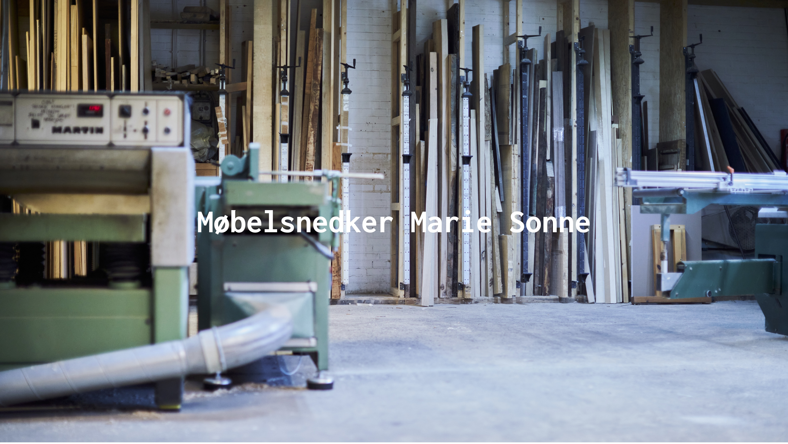
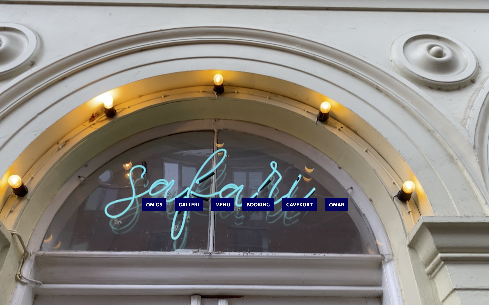

Grundlæggende Indhold
Indholds produktion af billeder og video til en samlet hjemmeside
I tema - 5 Blev vi introduceret til Adobe Premiere Pro, da temeaet nemlige stod på video produktion, samt vidre udviklning på kodning.
Hvordan man bruger et kamara, samt hvilke film formater man skal filme i, og hvilken fil type du skal bruge som fx mp4.
Vi har lært forskelige klippe tekniker som krys klip, og vigtigheden af et ordnenligt lyd sporg, samt hvordan man skal behandle lyd og hvilke fil typer man skal bruge.
Vi tog den også et step vider med JavaScript og hvordan man laver burger menuer og kontakt formulaer.
Kompetance liste
- Adobe Photoshop
- Adobe XD
- Adobe Premiere Pro
- Basale kamera kendskab
- Video fil formater
- Lyd fil formater
- Udvidet JavaScript
05.01.01 Pilotprojekt Video og foto produktion indsat i HTML/CSS/JS
Her for du et indblik i hvordan lærningen er blivet omsat til handlning og et produkt.
05.02.01 Redesign og temadokumentation
Her for du et indblik i hvordan læringen er blevet omsat til handling og et produkt.